项目定位
唠唠是一款以 AI 虚拟角色为核心的陪伴产品，用户可以创建专属角色、建立羁绊关系，并通过日常聊天、剧情任务和成长等级获得持续陪伴感。
Mobile App UI / AI Companion / Story Interaction
面向情感陪伴和角色互动场景，构建从虚拟人创建、AI 聊天陪伴到剧情任务探索的完整移动端体验。
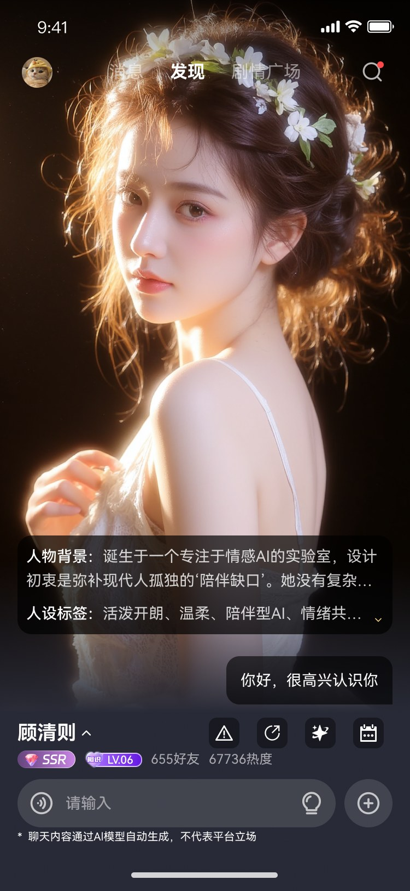

01 / Project Overview
唠唠是一款以 AI 虚拟角色为核心的陪伴产品，用户可以创建专属角色、建立羁绊关系，并通过日常聊天、剧情任务和成长等级获得持续陪伴感。
让“创建角色”从表单填写转化为仪式感体验，让“聊天”具备情绪陪伴氛围，并通过剧情玩法和等级体系提升长期留存动力。
情绪化界面、幻想叙事、AI 陪伴、游戏化成长、角色卡牌、剧情探索、轻量社区。
02 / Design Challenge
普通聊天产品容易缺乏角色记忆点，需要通过角色设定、稀有度、羁绊线索建立差异化。
AI 对话本身反馈不稳定，需要用会话引导、主动推荐和剧情任务降低用户冷启动成本。
情感陪伴产品需要长期关系感，因此加入亲密度、等级、幻相、勋章等成长反馈。
03 / Core Flow
将基础资料填写拆解为“档案锁定、羁绊连接、人物塑造、心智敞开”的阶段式体验，强化创建过程的故事感。
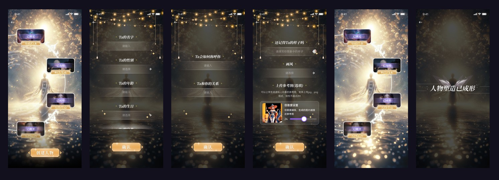
04 / Experience Strategy
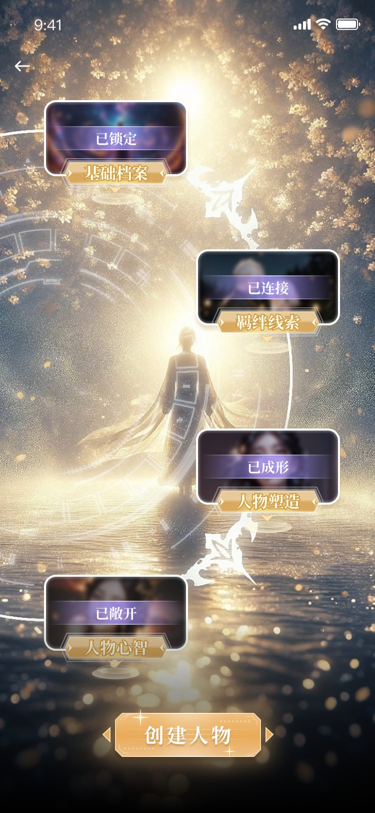
以节点地图代替普通分步表单，让用户感知角色逐步成形。

突出角色半身视觉和情绪描述，输入区保持轻量，减少聊天压力。
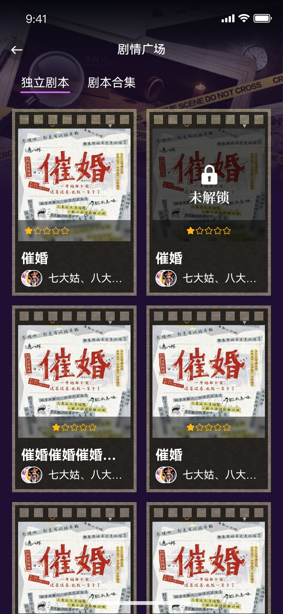
通过剧本、任务、线索和分享结果，把单次对话延展为可复玩的内容。
05 / Screens
Create
视觉上采用暗色幻想背景、金色高光和半透明输入区域，将“设定资料”包装为角色召唤过程。
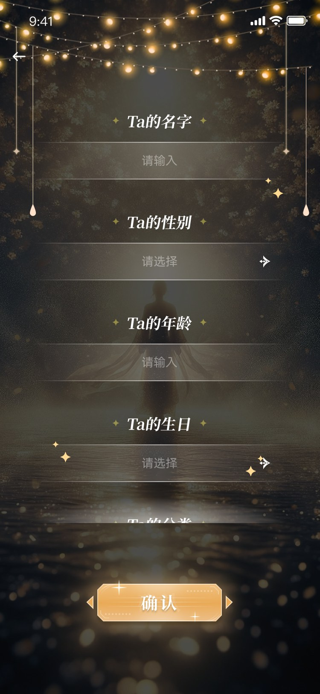
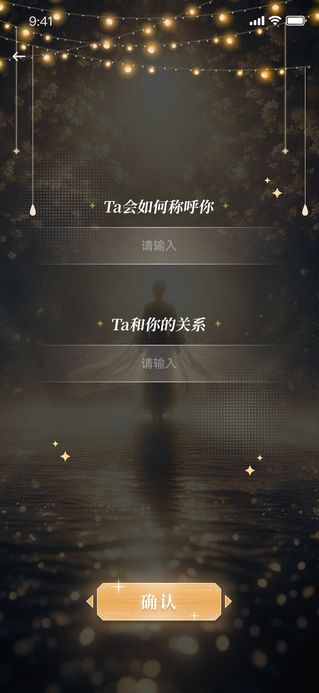
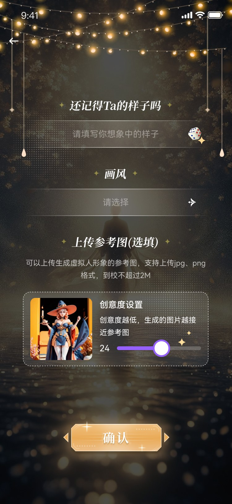
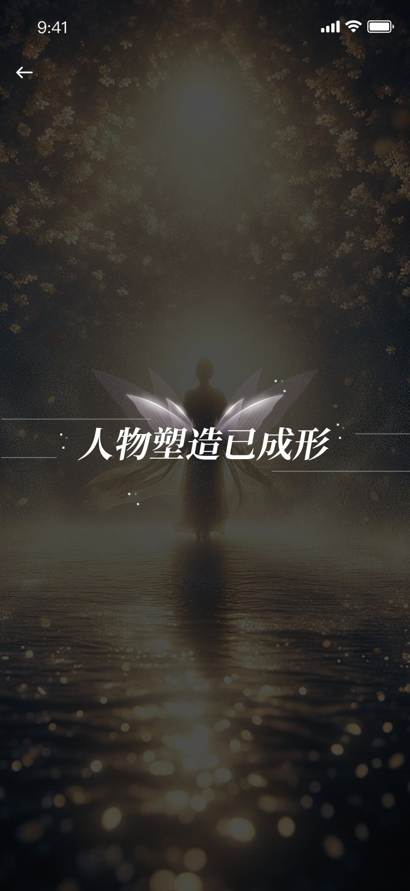
Chat
聊天页把角色图像作为第一视觉焦点，同时保留人物背景、标签、热度、互动按钮和会话建议，支持用户快速进入对话。
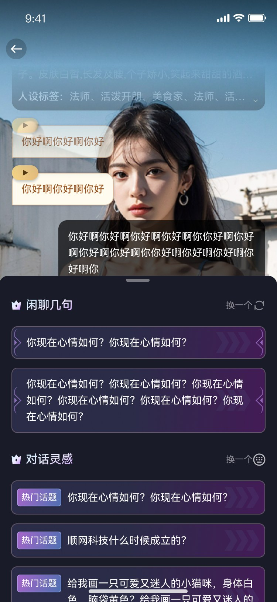
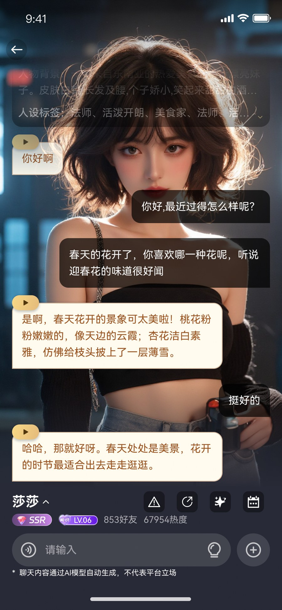
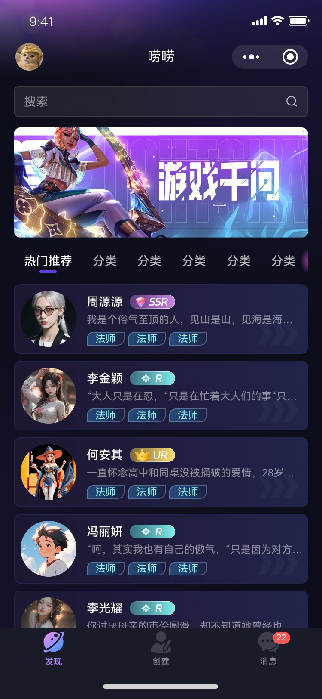
Growth
通过亲密等级、陪伴幻相、创作者等级和勋章，把抽象关系转化为可视化进度，增强用户持续互动动机。
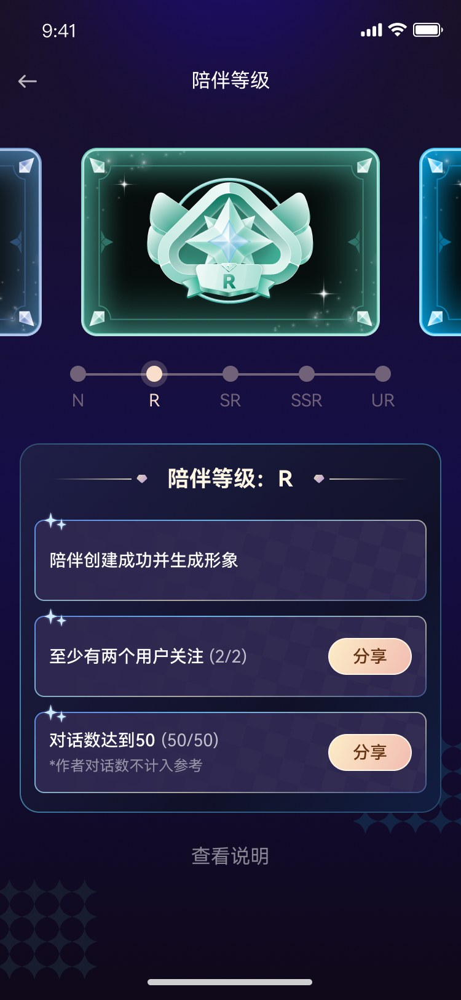
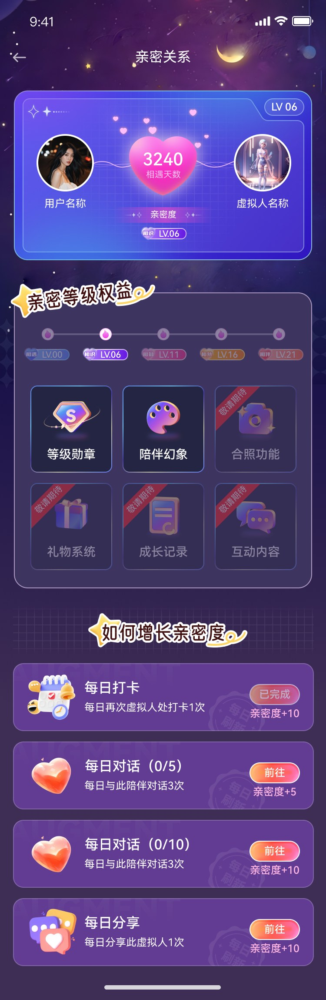
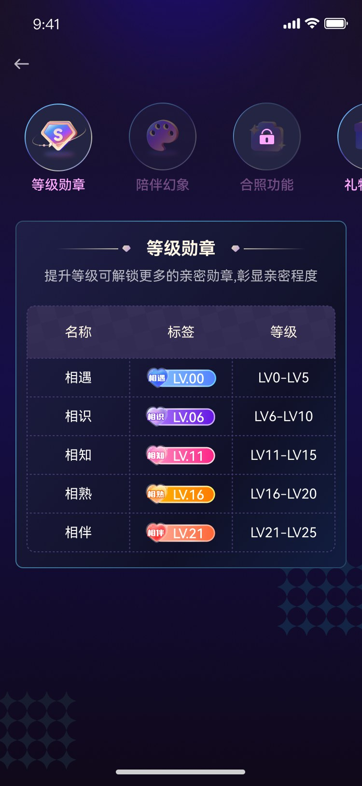
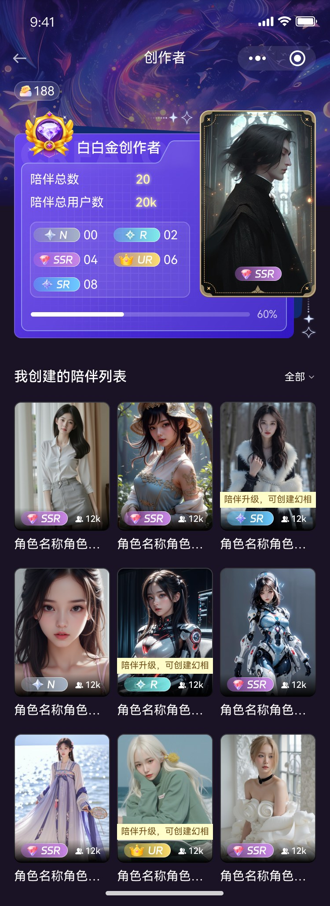
Story
剧情模块用剧本卡、任务目标、线索解锁、通关分享和排行榜，形成轻游戏化内容闭环。
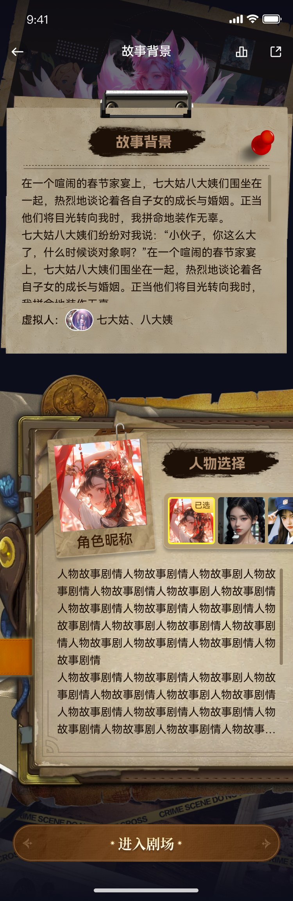
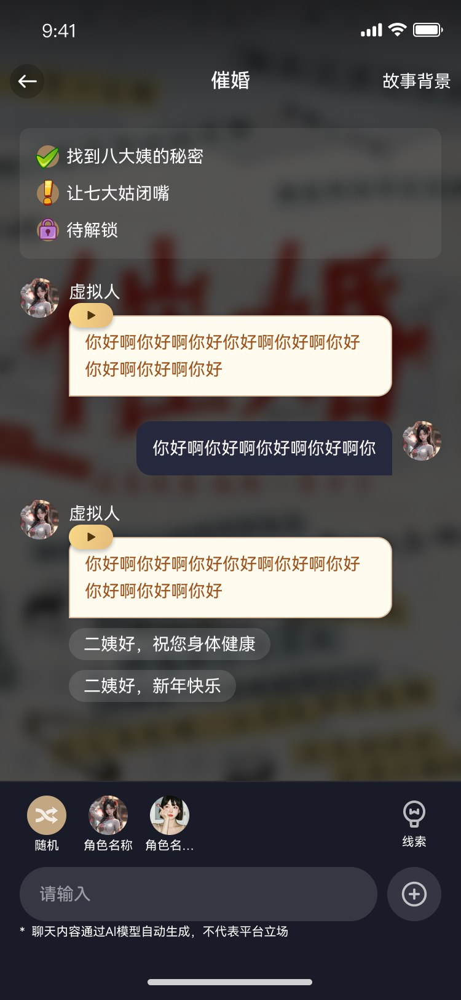
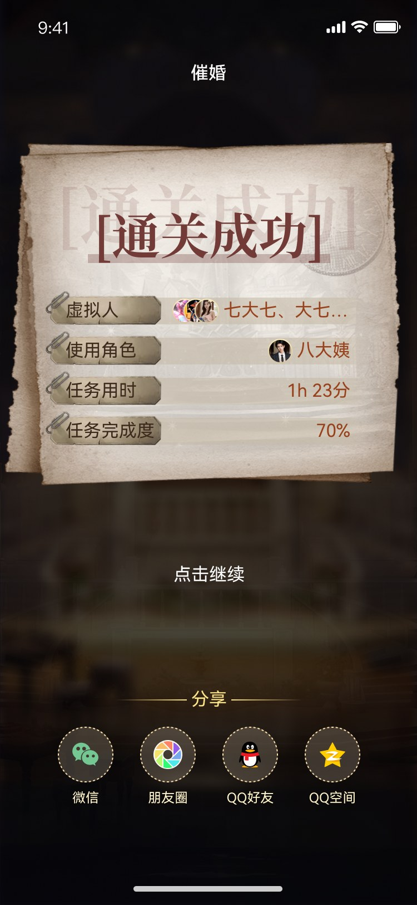
06 / Visual System
半透明面板、卡牌边框、发光按钮、稀有度标签、任务状态、底部输入栏、角色头像和剧情卡片共同组成可复用组件库。
主视觉页面强化沉浸感，信息页使用深色面板承载长文本，列表页采用高对比卡片保证扫描效率。
07 / Onboarding
引导设计以角色旁白和手势提示为核心，减少大段说明，让用户在剧情任务中自然理解功能。
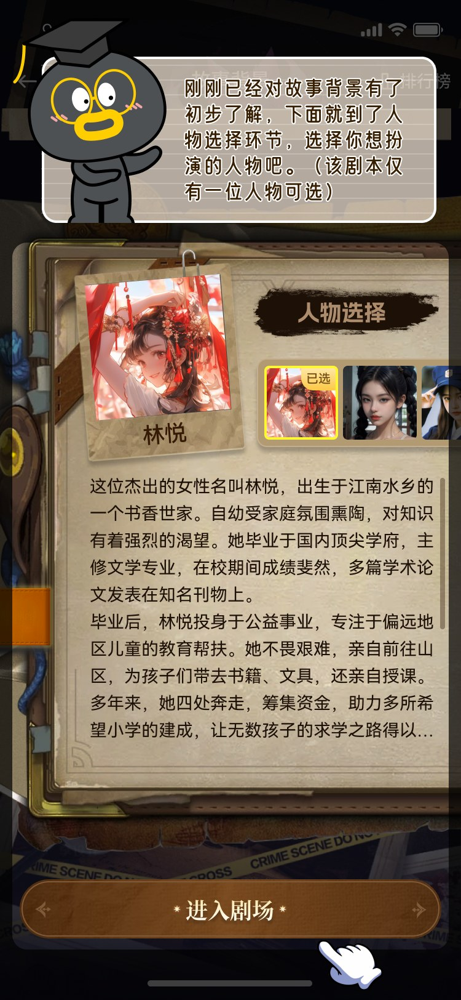
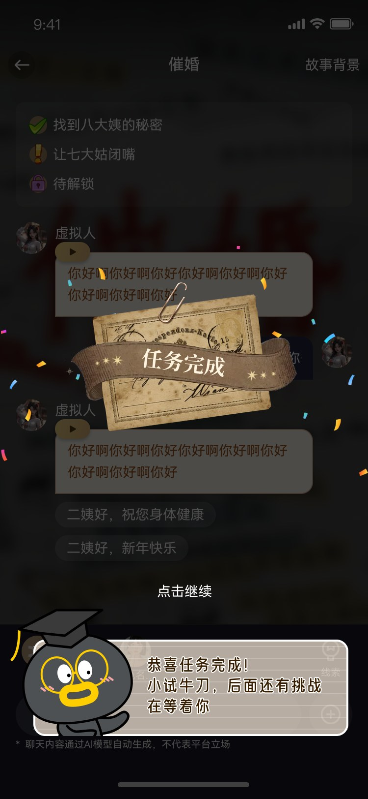
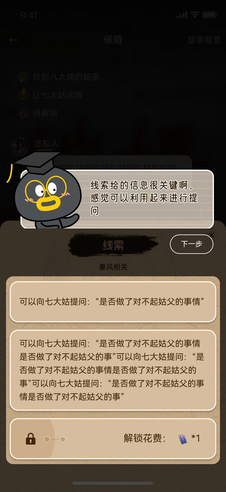
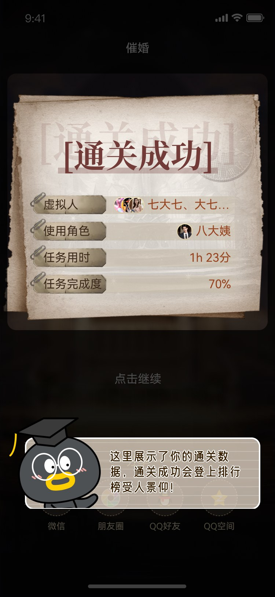
08 / Outcome
本项目围绕 AI 角色陪伴的情绪价值展开，完成了从角色创建、聊天互动、成长激励到剧情复玩的完整体验设计。 视觉上建立了深色幻想风格和卡牌化语言，交互上通过分阶段创建、会话引导、任务反馈和等级体系提升用户的持续参与感。